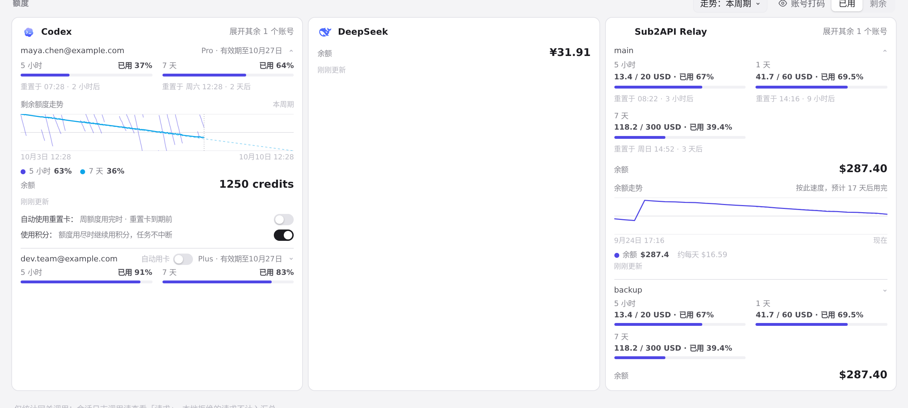
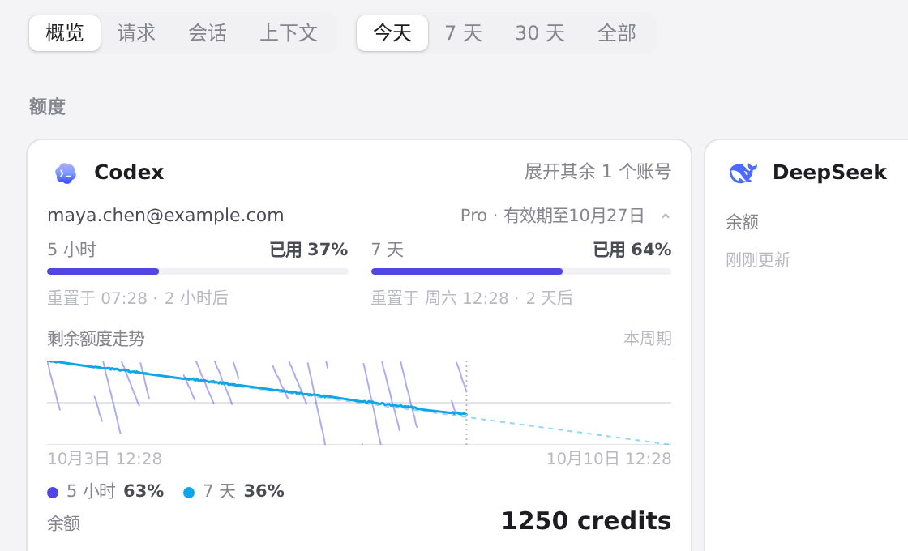
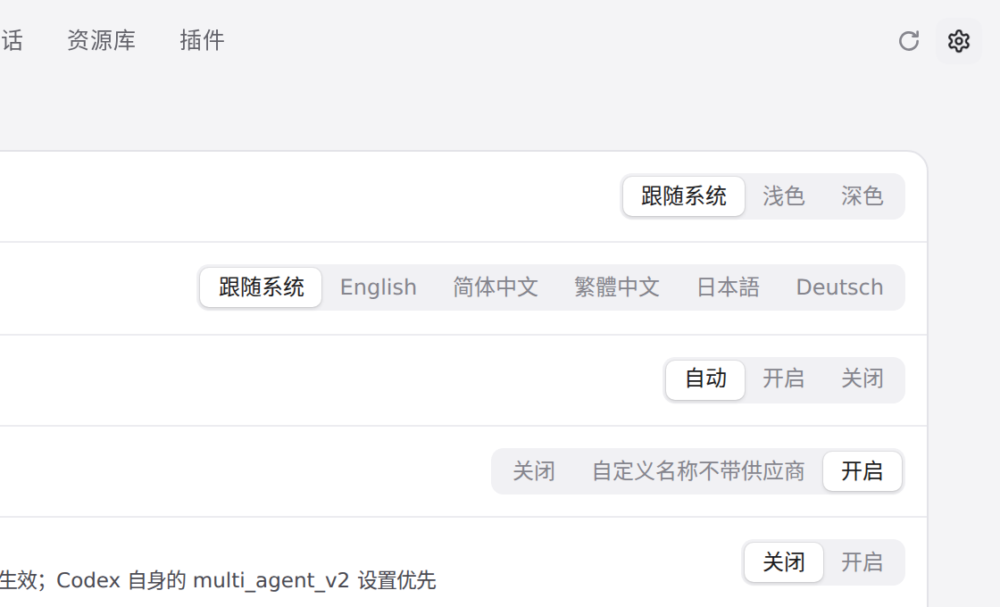

#1244 界面预览
commit 4f9858a · 回到 PR · 这个 diff 只在 i18n.js 里为 zh、zh-TW、ja、de 各加了一条词条：当插件把「Gift plans to claim in the ZCode app」这句英文当作额度窗口的名字送来时，卡片上的名字会随界面语言翻译，而窗口自己的 display（数量和套餐名）仍按原样显示。界面结构、CSS、交互都没有改，测试和 README 是附带的。
红线是鼠标走过的轨迹，红色圆环是一次点击；底部文字是这一步在做什么。空格暂停，← → 逐段查看。

用量页的额度卡片——领取提示行会出现的地方 · 用量页的额度卡片：插件送来的额度窗口就显示在这种卡片里

用量页的额度卡片——领取提示行会出现的地方 · 一个账号的额度窗口：左边是窗口名，右边是它自己的数值

设置里的语言选项 · 设置 › 常规的语言选项：这次的词条就是给这里的简体中文、繁體中文、日本語、Deutsch 加的